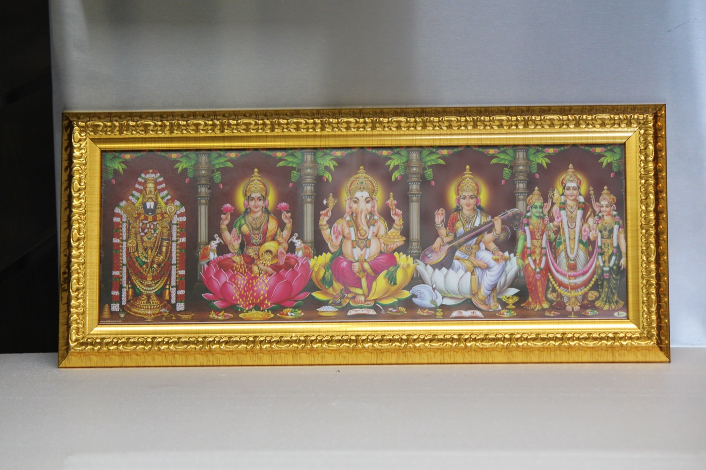
Build a brand that feels both rooted in tradition
and alive in the present — for a community far from home.
An Indian restaurant entering a Canadian market needed to stand out with warmth, authenticity, and cultural pride — without feeling generic or nostalgic.
"Manam" means "we" in Telugu. The brand needed to speak to a collective identity — a gathering place, a home away from home, for a diaspora community.
A warm, fire-and-gold visual language drawing on the heat of Indian spices, earthy textures, and bold typography built for both print and digital-first audiences.
From the first business card to the grand opening social campaign, every touchpoint needed to sing in harmony. The scope covered identity, print collateral, environmental design, packaging, social media systems, motion graphics, and ongoing content creation.
As the sole designer, I built a visual language that could scale across every channel — from Instagram carousels to 6-foot standees — without losing coherence.
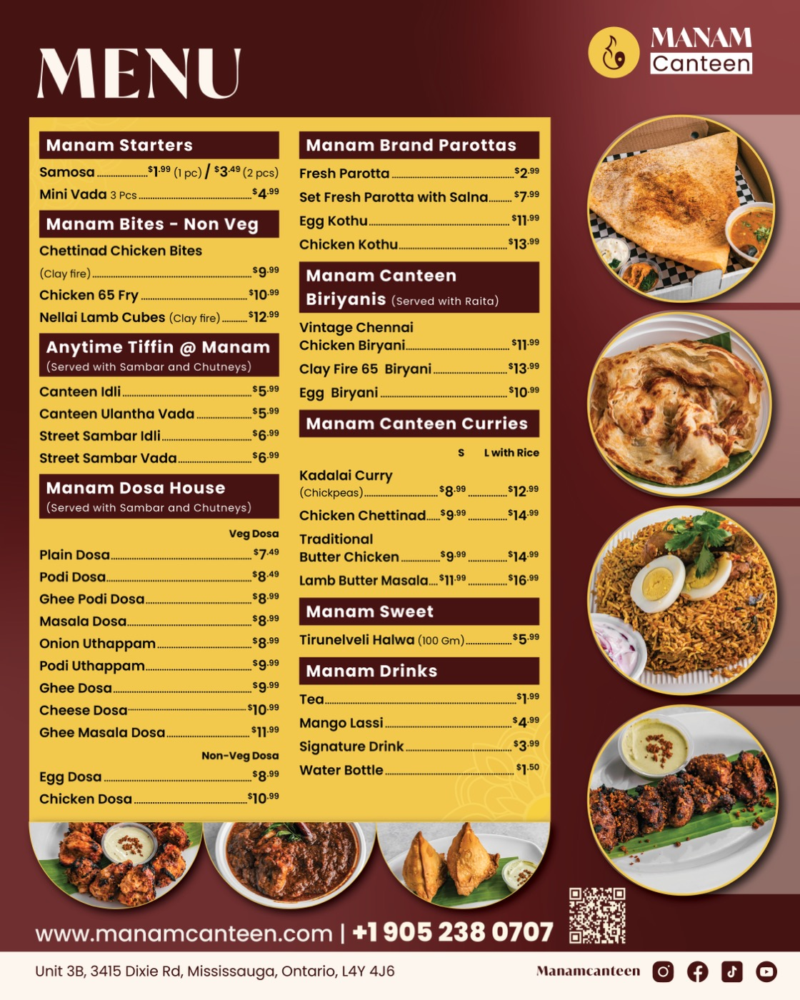
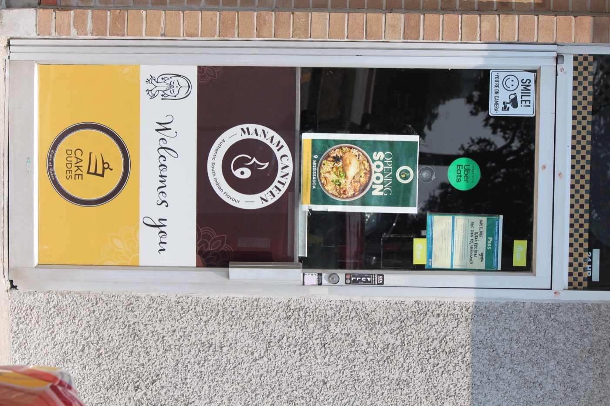
The palette draws directly from the warmth of Indian cooking — ember oranges, turmeric golds, and deep earthy browns grounded by a near-black base. Every colour has a meaning and a use rule.
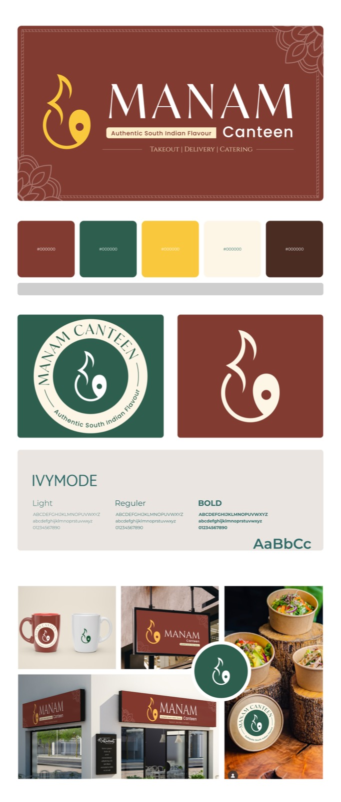
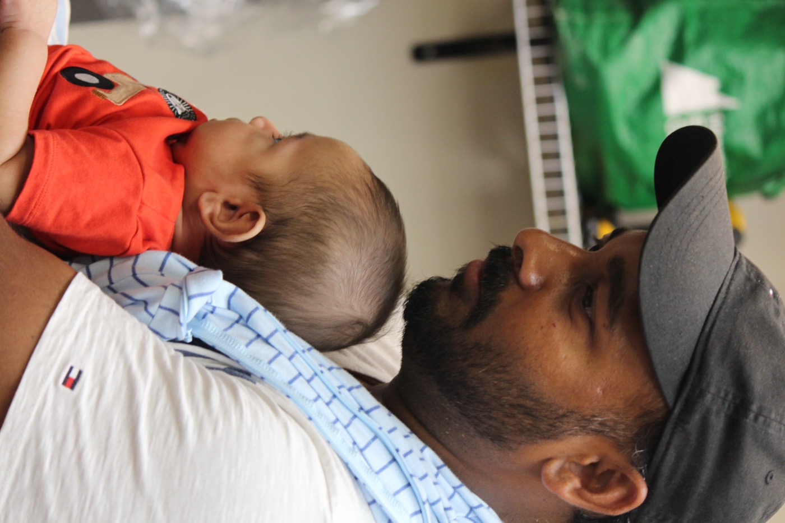
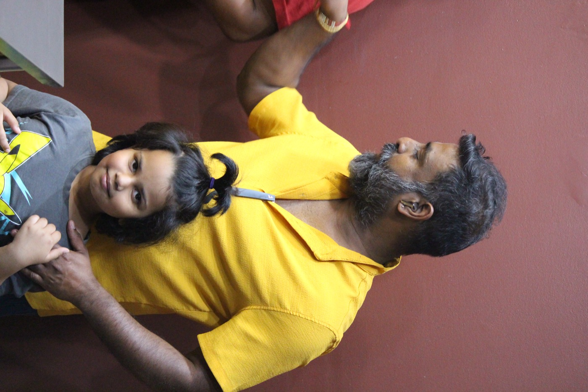
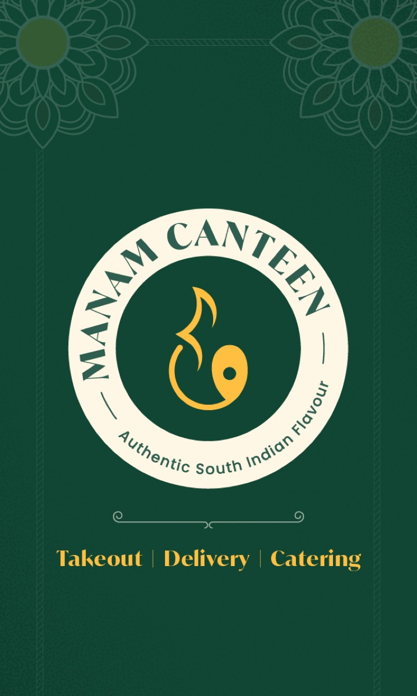
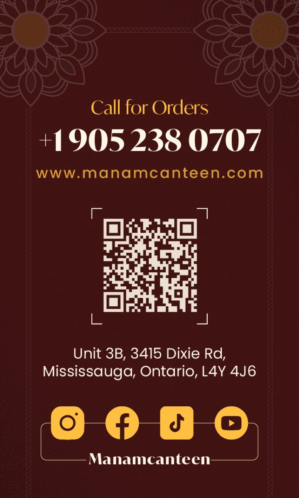
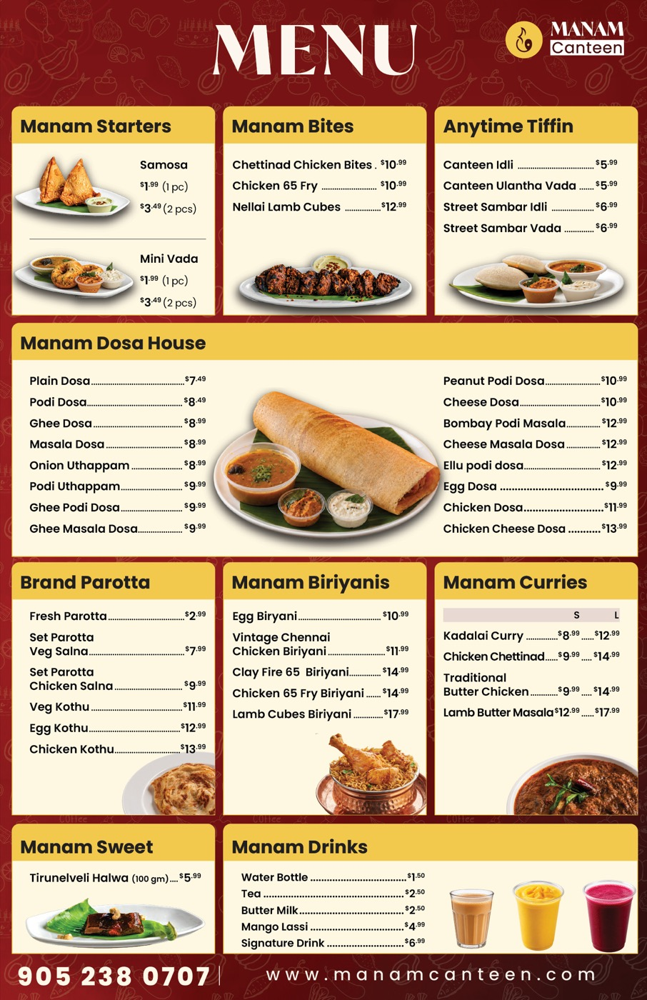
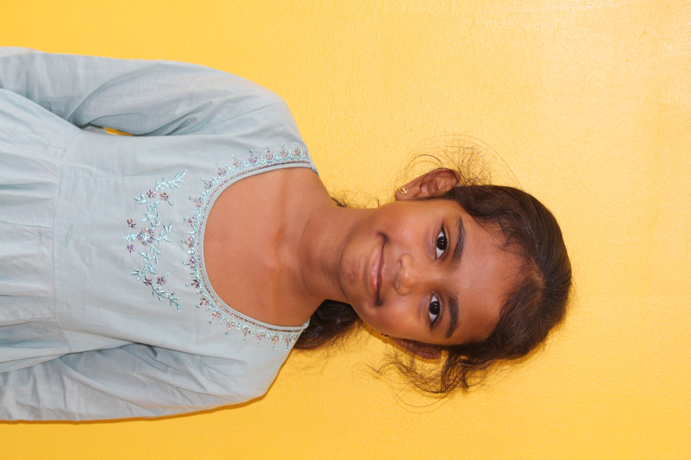
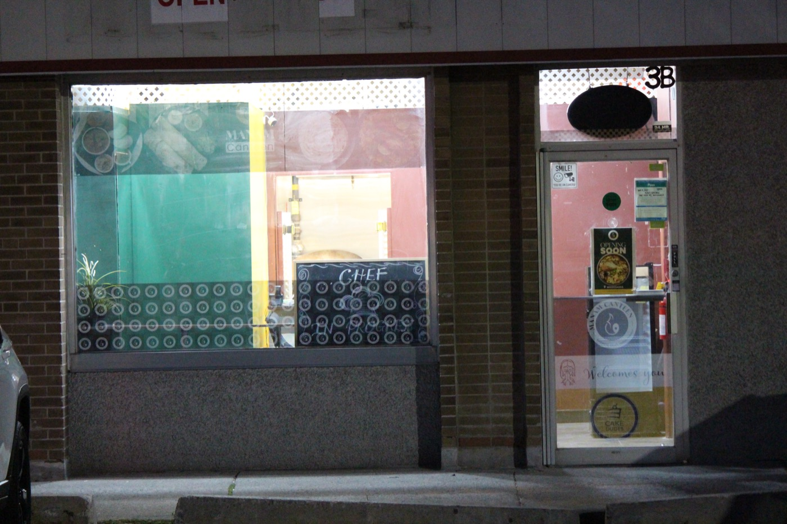
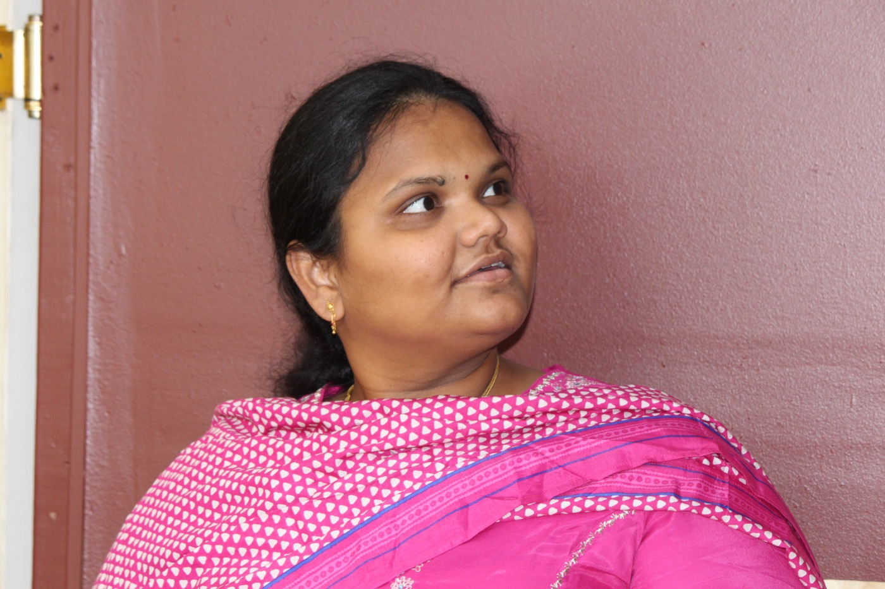
Balaji didn't just design our brand — he gave our restaurant a soul. Every piece felt like it was made with the same love we put into our food.